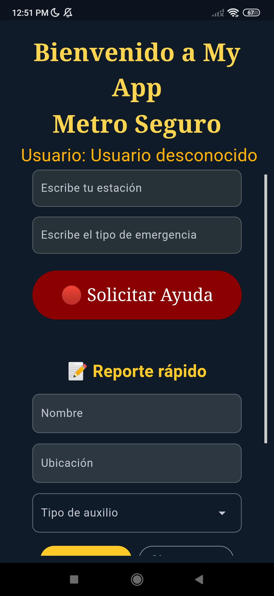

Características Principales
- 🔔 Notificaciones instantáneas
- 🗺️ Mapeo de zonas de riesgo
- 🕵️ Reportes anónimos
- 🛡️ Consejos de seguridad
- 📝 Historial de incidentes
Una aplicación que te protege durante tus viajes en el Sistema de Transporte Colectivo Metro de la Ciudad de México, brindándote auxilio inmediato en caso de emergencia.
Alerta inmediata para autoridades del Metro y policía cercana.
Localiza tu posición en tiempo real dentro del Metro.
Comunícate en tiempo real con el centro de control de seguridad.
Disponible para iOS y Android